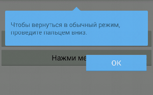
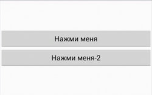
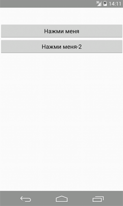

/* Моя кошка замечательно разбирается в программировании. Стоит мне объяснить проблему ей - и все становится ясно. */
John Robbins, Debugging Applications, Microsoft Press, 2000

/* Моя кошка замечательно разбирается в программировании. Стоит мне объяснить проблему ей - и все становится ясно. */
John Robbins, Debugging Applications, Microsoft Press, 2000

В статье Панель навигации показывались примеры, как скрыть панель навигации и строку состояния с помощью различных флагов. Данный способ имел одну особенность - достаточно было коснуться экрана и все скрытые панели появлялись снова. В некоторых случаях такой сценарий неудобен. Например, при чтении книги, развернутой во весь экран, касание экрана предназначено для листания страниц и появление панелей тут неуместно. Аналогично такая ситуация происходит с играми или просмотром видео.
Разработчики Android поняли о существовании этой проблемы и добавили в систему, начиная с Android 4.4, новые флаги, которые отвечают за новый режим погружения - Immersive Mode. Кстати, некоторые производитель уже раньше пытались использовать такие возможности в своих устройствах, но теперь это стало стандартом.
Суть погружения проста - пользователь должен сфокусироваться на содержании приложения и панели не должные его отвлекать во время чтения, просмотра, игры. Существует два способа погружения - полное и частично. При полном погружении панель навигации и строка состояния исчезают полностью. Чтобы их вернуть обратно, нужно сделать движение пальцем от верхнего (или нижнего) края экрана к центру. При частичном погружении аналогичное движение выводит скрытые части интерфейса на несколько секунд в полупрозрачном виде, которые затем автоматически исчезают снова. Если пользователь действительно хочет нажать на кнопку на панели навигации, то он должен уложиться в отведённое время. Не тормози!
Рассмотрим несколько примеров. Для демонстрации нам понадобятся две кнопки в стандартном проекте. Не забывайте, что пример должен работать для API 19 и выше.
Сначала приведу код
package ru.alexanderklimov.test;
import android.app.Activity;
import android.os.Bundle;
import android.view.Menu;
import android.view.View;
public class MainActivity extends Activity {
View mDecorView;
@Override
protected void onCreate(Bundle savedInstanceState) {
super.onCreate(savedInstanceState);
setContentView(R.layout.activity_main);
mDecorView = getWindow().getDecorView();
setTitle("Immersive Demo");
}
@Override
public boolean onCreateOptionsMenu(Menu menu) {
getMenuInflater().inflate(R.menu.main, menu);
return true;
}
public void onClick(View v) {
hideSystemUI();
}
public void onClick2(View v) {
showSystemUI();
}
// Прячем панель навигации и строку состояния
private void hideSystemUI() {
// Используем флаг IMMERSIVE.
mDecorView.setSystemUiVisibility(
View.SYSTEM_UI_FLAG_LAYOUT_STABLE
| View.SYSTEM_UI_FLAG_LAYOUT_HIDE_NAVIGATION
| View.SYSTEM_UI_FLAG_LAYOUT_FULLSCREEN
| View.SYSTEM_UI_FLAG_HIDE_NAVIGATION // прячем панель навигации
| View.SYSTEM_UI_FLAG_FULLSCREEN // прячем строку состояния
| View.SYSTEM_UI_FLAG_IMMERSIVE);
}
// Программно выводим системные панели обратно
private void showSystemUI() {
mDecorView.setSystemUiVisibility(
View.SYSTEM_UI_FLAG_LAYOUT_STABLE
| View.SYSTEM_UI_FLAG_LAYOUT_HIDE_NAVIGATION
| View.SYSTEM_UI_FLAG_LAYOUT_FULLSCREEN);
}
@Override
public void onWindowFocusChanged(boolean hasFocus) {
super.onWindowFocusChanged(hasFocus);
if (hasFocus) {
mDecorView.setSystemUiVisibility(
View.SYSTEM_UI_FLAG_LAYOUT_STABLE
| View.SYSTEM_UI_FLAG_LAYOUT_HIDE_NAVIGATION
| View.SYSTEM_UI_FLAG_LAYOUT_FULLSCREEN
| View.SYSTEM_UI_FLAG_HIDE_NAVIGATION
| View.SYSTEM_UI_FLAG_FULLSCREEN
| View.SYSTEM_UI_FLAG_IMMERSIVE_STICKY);}
}
}
Для удобства вынесем методы скрытия и показа системных панелей в отдельные методы showSystemUI() и hideSystemUI(). У объекта View есть знакомый нам метод setSystemUiVisibility(), которому нужно передать нужные флаги. Посмотрим, что получится, если мы попытаемся скрыть системные панели с флагом SYSTEM_UI_FLAG_IMMERSIVE (щелчок на первой кнопке).

Если это произошло в первый раз в вашем приложении, то пользователь увидит следующее. Экран затемнится и поверх него появится подсказка Чтобы вернуться в обычный режим, проведите пальцем вниз и кнопка OK. Если пользователь нажмёт на кнопку OK, то он больше не увидит подсказку при следующем запуске приложения. Будет считаться, что пользователь запомнил эту настройку.
После нажатия кнопки OK или при повторном запуске вы увидите приложение в полноэкранном режиме.

Кроме движения пальцем от краев экрана, вы можете вернуть видимость скрытых панелей программно - смотри код для щелчка второй кнопки.
Пример с частичным погружением реализован в методе onWindowFocusChanged(). Как только ваше приложение запустится на экране и получит фокус, то сразу перейдёт в режим частичного погружения. При движении пальцем от краёв экрана, вы увидите на несколько секунд системные панели в полупрозрачном состоянии.

Разница заключается в одном флаге. Вместо флага SYSTEM_UI_FLAG_IMMERSIVE нужно использовать флаг SYSTEM_UI_FLAG_IMMERSIVE_STICKY.
В реальном приложении вам не нужно использовать два режима одновременно. Здесь это показано в демонстрационных целях. Режим полного погружения желательно использовать при чтении книг, журналов, новостей. Частичное погружение рекомендуют использовать в играх и рисовалках.
Immersive Mode (режим погружения) в Android 4.4 KitKat